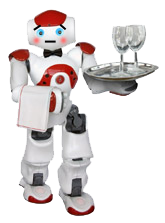

The Model
For this specific scenario, eight especially relevant emotions were chosen. Taking an approach inline with opponent-process theory, these eight emotions were organized into opposing pairs. The chosen emotions are (loosely) inspired by Roseman's Theory of Appraisal.
| Goal Congruent | Non-Congruent |
|---|---|
| Hope | Despair |
| Joy | Frustration |
| Relief | Disappointment |
| Pride | Embarassment |
hope_despair = 0.8. If the waiter has some degree of diespair: hope_despair = -0.3.
In addition to storing values for the four emotion pairs, the waiter maintains the following knowledge of the world, based on which it can conduct its appraisal.
- Expected time based on past experience
- Estimated time for this round
- Elapsed time this round
- Progress
- Customer satisfaction
The simulation is run in discrete steps. Each step proceeds as follows.
function step:
if random() > DEFINED_LIKELIHOOD:
add_random_blockage()
if random() > DEFINED_LIKELIHOOD:
remove_random_blockage()
waiter.recalculate_path()
emotions = waiter.appraise()
gui.update(emotions)
function waiter.appraise:
if elapsed_time > 0:
time_difference = previous_estimate - current_estimate
emotions.relief_disappointment = time_difference / previous_estimate
emotion.joy_frustration = (expected_time - (estimated_time + elapsed_time)) / expected_time
emotion.hope_despair = (0.75 * expected_time - elapsed_time) * 0.01 * abs(emotion.joy_frustration - 1)
if round is complete:
emotion.pride_embarassment = emotion.joy_frustration / (1 + customer_friendliness)
for each emotion:
deltas[emotion] = (prev_emotion_value - emotion) / prev_emotion_value
deltas.sort()
return highest delta where sign(delta) == sign(emotion)
Relief / Disappointment
The first emotion calculated is relief/disappointment. This is an appraisal of how drastically the current event impacts progress. A sudden decrease in travel time would be a relief, whereas being rerouted 6 blocks when only 2 blocks away from finishing would be a big disappointment.time_difference = previous_estimate - current_estimate emotions.relief_disappointment = time_difference / previous_estimateIt is simply the calculation of the percent change in time estimate for goal completion.
Joy / Frustration
This emotion is calculated by comparing initially projected progress to current progress. If things are ahead of schedule, the result is joy. If the path is slow going, it is a frustrating experience.emotion.joy_frustration = (expected_time - (estimated_time + elapsed_time)) / expected_time
Hope / Despair
Hope/despair is a measure of progress with respect to time elapsed, which occurs when the path is blocked. Early on in the simulation, the robot will experience hope if the path is blocked. Later in the simulation, this will slide to despair as time remaining to accomplish the goal on schedule runs out.if path_blocked:
time_remaining = expected_time - elapsed_time
hope_despair = time_remaining / estimated_time
Pride / Embarassment
Pride/embarassment is appraised only once the goal is complete. A variable for how friendly the customer is acts like an oversimplified theory of mind. The waiter takes into account the thoughts and expectations of the customer.customer_friendliness is a random number between 0.5 and 1.5 that varies round by round.
if goal_complete:
emotion.pride_embarassment = emotion.joy_frustration / customer_friendliness
Sample Cases
The demo defaults to random block placement, but two predefined sample sequences are available to choose from. There is also a full manual mode where you can add and remove blocks by clicking on the board. Note: you can always add and remove blocks by doing this, not just in manual mode. Manual mode simply prevents any blocks from being added or removed by the computer.
Joy Specific
The joy specific sequence is very simple. No blocks ever intrude with the robot's path, which is ideal. Note that joy is always positive and increasing as the robot moves through the path, never encountering any obstructions. At the end of the path, the robot experiences pride as it arrives sooner than it expected.
Frustration Specific
The frustration specific sequence is designed to demonstrate all the emotions not demonstrated in the joy sequence. Throughout this example the robot will experience frustration, disappointment, relief, hope, despair, and embarassment.
- The robot proceeds upwards without any obstructions.
- Once the robot has traveled to the top of the board, a piece blocks its path, causing it to retrace its steps to go around the obstruction. This causes the robot disappointment, as things were going well and were suddenly interrupted.
- Next, the corner with the table is blocked off, leaving no possible path. The robot stops. The initial emotion is again disappointment. Hope increases, as it is still early enough in the simulation for things to improve and for the delivery to be made on time.
- Frustration increases as time is wasted waiting for the path to clear. Hope changes to despair as the threshold is reached where the situation cannot improve in time for a timely delivery.
- When the blocks clear, the robot feels relief.
- When the delivery is made, the robot is embarassed because it is very late.
The Interface
The simulation is controlled using the toolbar in the top left. A dropdown menu allows you to change the pre-programmed block-placing sequence.
The values of the emotion pairs are represented using gauges that update as events unfold. The emotion with the most significant delta is represented on the face of the robot as it traverses the map. The following face is used to represent all four positive emotions.
Happy

Each of the four negative emotions has its own representation.
Despair

Frustrated

Disappointed

Embarassed
System Requirements
This project was built and tested using Google Chrome. While it should work on any modern browser (IE 9+), I can only guarantee that it will only function 100% properly with Chrome.
An internet connection is required to retrieve Google's chart libraries at runtime (for the gauges).
Questions
If you have any problems or questions, please send me an email: schuld6@rpi.edu.